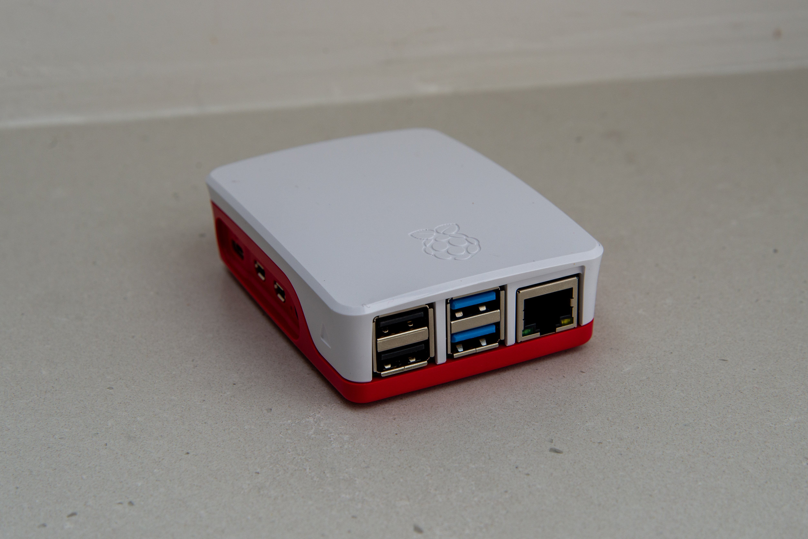

Handheld AR Device
Senior Capstone
Finished on: Ongoing
This project is meant to create an AR device that is more intuitive and more easliy shared. The project uses a Raspberry Pi 4 Model B with a camera to capturea a video feed. The video feed will be parsed using OpenCV to find a QR code. That QR code describes the data that needs to shown at that space. A graphic is then created in unity to match the QR code and projected back out. The graphic is placed in the scene relative to QR code.